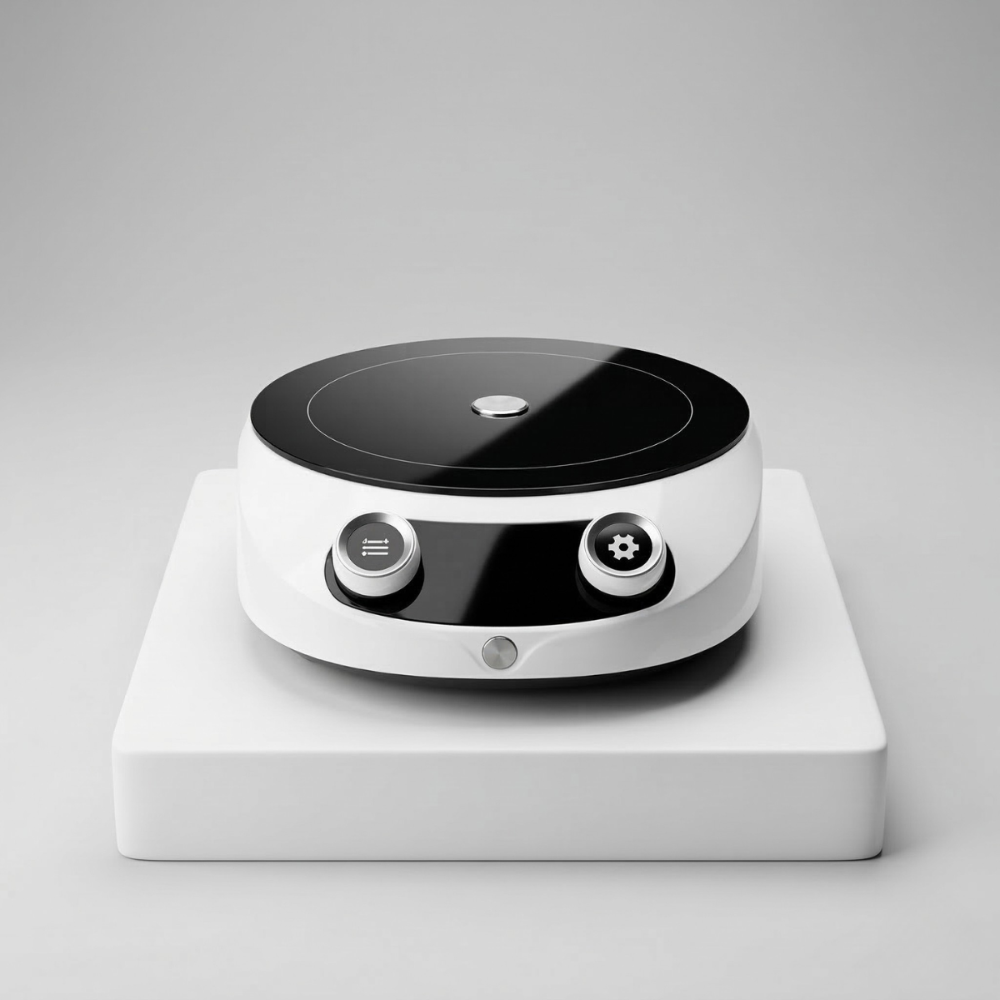

La parrilla de inducción que necesitas para una cocina inteligente. Compacta, portátil y diseñada para darte mayor precisión en temperatura, potencia y tiempo de cocción.
Precision Cook es ideal para quienes desean una solución moderna y práctica para cocinar con mayor exactitud, tanto en interiores como en espacios donde se necesita una estación portátil y eficiente.
La Royal Prestige® Precision Cook está diseñada para ayudarte a cocinar con exactitud, eliminando las adivinanzas en temperatura, cantidades y tiempos.
Su superficie de vitrocerámica es fácil de limpiar y su diseño portátil permite usarla como apoyo en la cocina diaria o como una opción práctica para cocinar en otros espacios.
Además, integra controles avanzados que hacen más sencilla la preparación de recetas delicadas, cocción lenta, precalentado y ajustes precisos según lo que estés preparando.
Permite pesar en onzas o gramos directamente en el equipo, facilitando recetas que requieren mayor exactitud.
Cuenta con niveles de potencia del 1 al 10 para ajustar la intensidad de cocción según cada preparación.
Ayuda a mantener un control más preciso del calor y permite cocinar con ajustes más exactos.
Integra temporizador de hasta 10 horas, ideal para procesos largos o preparaciones que requieren seguimiento controlado.
Consulta el catálogo oficial para conocer más detalles sobre Precision Cook y descubrir cómo puede integrarse a tu cocina diaria como una herramienta precisa, portátil y funcional.
Escríbenos y te ayudamos a descubrir si esta parrilla de inducción es la opción ideal para tu cocina, tu espacio y tu forma de cocinar con mayor precisión.